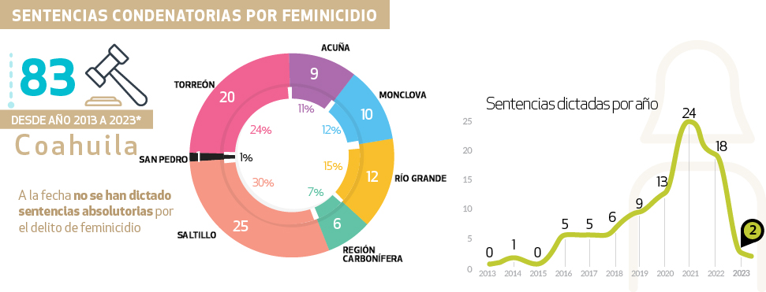
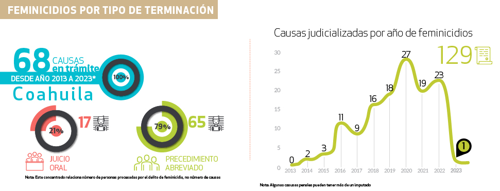

Nuestras instancias judiciales se rigen bajo los principios de transparencia y rendición de cuentas, para que aquellos interesados en conocer nuestra labor cuenten con los mecanismos necesarios para acceder a toda la información que generamos, como acuerdos tomados, audiencias públicas y comunicación directa en líneas de atención al usuario.
Periodo de actualización de la información
Trimestral (Marzo 2023)

Nota: de 2013 a la fecha se han dictado 83 sentencias condenatorias por el delito de feminicidio.
| Distrito Judicial | 2013 | 2014 | 2015 | 2016 | 2017 | 2018 | 2019 | 2020 | 2021 | 2022 | 2023 |
|---|---|---|---|---|---|---|---|---|---|---|---|
| Acuña | 1 | 1 | 2 | 5 | |||||||
| Frontera | 2 | 2 | 1 | 2 | 3 | ||||||
| Río Grande | 1 | 1 | 1 | 2 | 5 | 1 | 1 | ||||
| Sabinas | 3 | 1 | 2 | ||||||||
| Saltillo | 1 | 3 | 2 | 2 | 4 | 2 | 5 | 5 | 1 | ||
| San Pedro | 1 | ||||||||||
| Torreón | 3 | 2 | 3 | 7 | 5 |
Sentencias absolutorias
Nota: A la fecha no se han dictado sentencias absolutorias por el delito de feminicidio

Nota: algunas casusas penales pueden tener más de un imputado.
| Distrito Judicial | 2013 | 2014 | 2015 | 2016 | 2017 | 2018 | 2019 | 2020 | 2021 | 2022 | 2023 |
|---|---|---|---|---|---|---|---|---|---|---|---|
| Acuña | 1 | 3 | 3 | 3 | |||||||
| Frontera | 1 | 1 | 1 | 1 | 1 | 2 | 4 | 2 | 1 | ||
| Río Grande | 4 | 2 | 1 | 2 | 4 | 1 | 3 | ||||
| Sabinas | 1 | 1 | 2 | 1 | 1 | ||||||
| Saltillo | 1 | 2 | 4 | 3 | 5 | 6 | 5 | 7 | 7 | 1 | |
| San Pedro | 2 | 1 | |||||||||
| Torreón | 1 | 3 | 8 | 7 | 7 | 5 | 7 |
- Tipo de terminación de la causa
| Distrito Judicial | Trámite | Procedimiento Abreviado | Juicio oral |
|---|---|---|---|
| Acuña | 2 | 8 | 0 |
| Frontera | 4 | 7 | 3 |
| Río Grande | 9 | 11 | 1 |
| Sabinas | 2 | 5 | 1 |
| Saltillo | 19 | 20 | 5 |
| San Pedro | 3 | 1 | 0 |
| Torreón | 29 | 13 | 7 |
| Total | 68 | 65 | 17 |
Nota: este concentrado relaciona número de personas procesadas por el delito de feminicidio, no número de causas penales.
- Descarga de Sentencias
| Link para descarga: |
|---|
| https://tinyurl.com/2fl6keou |
| https://tinyurl.com/2o8nj5kv |
| https://tinyurl.com/2ju53h5j |
| https://tinyurl.com/2e9vyoro |
| https://tinyurl.com/2jd8oass |
| https://tinyurl.com/2ekyk76u |
| https://tinyurl.com/2q3v4mcw |
| https://storage.googleapis.com/pjecz-consultas/Sentencias/Distrito%20de%20Monclova/Juzgado%20de%20Primera%20Instancia%20Penal%20del%20Sistema%20Acusatorio%20y%20Oral%20Frontera/2021/Marzo/2021-03-06-6-2021-362-2019-BL7pNp5D.pdf |
| https://storage.googleapis.com/pjecz-consultas/Sentencias/Distrito%20de%20Monclova/Juzgado%20de%20Primera%20Instancia%20Penal%20del%20Sistema%20Acusatorio%20y%20Oral%20Frontera/2020/Marzo/2020-03-04-0011-2020-0026-2020-g.pdf |
| https://storage.googleapis.com/pjecz-consultas/Sentencias/Distrito%20de%20Monclova/Juzgado%20de%20Primera%20Instancia%20Penal%20del%20Sistema%20Acusatorio%20y%20Oral%20Frontera/2021/Marzo/2021-03-05-3-2021-0236-2020-eJzn0gJd.pdf |
| https://storage.googleapis.com/pjecz-consultas/Sentencias/Distrito%20de%20Monclova/Juzgado%20de%20Primera%20Instancia%20Penal%20del%20Sistema%20Acusatorio%20y%20Oral%20Frontera/2021/Enero/2021-01-28-0037-2020-0237-2020.pdf |
| https://storage.googleapis.com/pjecz-consultas/Sentencias/Distrito%20de%20Monclova/Juzgado%20de%20Primera%20Instancia%20Penal%20del%20Sistema%20Acusatorio%20y%20Oral%20Frontera/2021/Mayo/2021-05-28-19-2021-400-2020-BLnEN28N.pdf |
| https://storage.googleapis.com/pjecz-consultas/Sentencias/Distrito%20de%20Rio%20Grande/Juzgado%20de%20Primera%20Instancia%20en%20Materia%20Penal%20del%20Sistema%20Acusatorio%20y%20Oral%20Piedras%20Negras/2020/Diciembre/2020-12-31-211-2020-48-2016.pdf |
| https://storage.googleapis.com/pjecz-consultas/Sentencias/Distrito%20de%20Rio%20Grande/Juzgado%20de%20Primera%20Instancia%20en%20Materia%20Penal%20del%20Sistema%20Acusatorio%20y%20Oral%20Piedras%20Negras/2019-05-23-77-2018-539-2018-g.pdf |
| https://storage.googleapis.com/pjecz-consultas/Sentencias/Distrito%20de%20Rio%20Grande/Juzgado%20de%20Primera%20Instancia%20en%20Materia%20Penal%20del%20Sistema%20Acusatorio%20y%20Oral%20Piedras%20Negras/2021/Febrero/2021-02-11-113-2019-316-2019.pdf |
| https://storage.googleapis.com/pjecz-consultas/Sentencias/Distrito%20de%20Rio%20Grande/Juzgado%20de%20Primera%20Instancia%20en%20Materia%20Penal%20del%20Sistema%20Acusatorio%20y%20Oral%20Piedras%20Negras/2021/Julio/2021-07-31-184-2021-1363-2019-aJPApw8G.pdf |
| https://storage.googleapis.com/pjecz-consultas/Sentencias/Distrito%20de%20Rio%20Grande/Juzgado%20de%20Primera%20Instancia%20en%20Materia%20Penal%20del%20Sistema%20Acusatorio%20y%20Oral%20Piedras%20Negras/2020/Febrero/2020-02-11-097-2020-537-2020.pdf |
| https://storage.googleapis.com/pjecz-consultas/Sentencias/Distrito%20de%20Rio%20Grande/Juzgado%20de%20Primera%20Instancia%20en%20Materia%20Penal%20del%20Sistema%20Acusatorio%20y%20Oral%20Piedras%20Negras/2021/Julio/2021-07-31-178-2021-690-2020-yLraP78g.pdf |
| https://storage.googleapis.com/pjecz-consultas/Sentencias/Distrito%20de%20Rio%20Grande/Juzgado%20de%20Primera%20Instancia%20en%20Materia%20Penal%20del%20Sistema%20Acusatorio%20y%20Oral%20Piedras%20Negras/2021/Septiembre/2021-09-09-220-2021-708-2020-yLr1Xl8g.pdf |
| https://storage.googleapis.com/pjecz-consultas/Sentencias/Distrito%20de%20Rio%20Grande/Juzgado%20de%20Primera%20Instancia%20en%20Materia%20Penal%20del%20Sistema%20Acusatorio%20y%20Oral%20Piedras%20Negras/2021/Noviembre/2021-11-06-354-2021-1089-2020-d5y4YgLD.pdf |
| https://storage.googleapis.com/pjecz-consultas/Sentencias/Distrito%20de%20Rio%20Grande/Juzgado%20de%20Primera%20Instancia%20en%20Materia%20Penal%20del%20Sistema%20Acusatorio%20y%20Oral%20Piedras%20Negras/2022/Julio/2022-07-12-159-2022-037-2021-JEVF-BLnVxMLN.pdf |
| https://storage.googleapis.com/pjecz-consultas/Sentencias/Distrito%20de%20Sabinas/Juzgado%20de%20Primera%20Instancia%20Penal%20del%20Sistema%20Acusatorio%20y%20Oral%20Sabinas/2021/Mayo/2021-05-25-72-2020-89-2016.pdf |
| https://storage.googleapis.com/pjecz-consultas/Sentencias/Distrito%20de%20Sabinas/Juzgado%20de%20Primera%20Instancia%20Penal%20del%20Sistema%20Acusatorio%20y%20Oral%20Sabinas/2021/Octubre/2021-10-06-52-2021-216-2020-vLoebpJ6.pdf |
| https://storage.googleapis.com/pjecz-consultas/Sentencias/Distrito%20de%20Saltillo/Juzgado%20de%20Primera%20Instancia%20en%20Materia%20Penal%20del%20Sistema%20Acusatorio%20y%20Oral%20Saltillo/2023/Febrero/2023-02-14-24-2016-80-2015-57QPErAP.pdf |
| https://storage.googleapis.com/pjecz-consultas/Sentencias/Distrito%20de%20Saltillo/Juzgado%20de%20Primera%20Instancia%20en%20Materia%20Penal%20del%20Sistema%20Acusatorio%20y%20Oral%20Saltillo/2023/Febrero/2023-02-14-66-2016-224-2015-N7Xzbxq1.pdf |
| https://storage.googleapis.com/pjecz-consultas/Sentencias/Distrito%20de%20Saltillo/Juzgado%20de%20Primera%20Instancia%20en%20Materia%20Penal%20del%20Sistema%20Acusatorio%20y%20Oral%20Saltillo/2022/Diciembre/2022-12-09-253-2016-253-2016-G-z0bgJyq3.pdf |
| https://storage.googleapis.com/pjecz-consultas/Sentencias/Distrito%20de%20Saltillo/Juzgado%20de%20Primera%20Instancia%20en%20Materia%20Penal%20del%20Sistema%20Acusatorio%20y%20Oral%20Saltillo/2023/Febrero/2023-02-14-26-2017-388-2016-E0lm9eqg.pdf |
| https://storage.googleapis.com/pjecz-consultas/Sentencias/Distrito%20de%20Saltillo/Juzgado%20de%20Primera%20Instancia%20en%20Materia%20Penal%20del%20Sistema%20Acusatorio%20y%20Oral%20Saltillo/2020/Octubre/2020-10-27-818-2018-818-2018-g.pdf |
| https://storage.googleapis.com/pjecz-consultas/Sentencias/Distrito%20de%20Saltillo/Juzgado%20de%20Primera%20Instancia%20en%20Materia%20Penal%20del%20Sistema%20Acusatorio%20y%20Oral%20Saltillo/2020/Octubre/2020-10-19-1500-2018-1500-2018-g.pdf |
| https://storage.googleapis.com/pjecz-consultas/Sentencias/Distrito%20de%20Saltillo/Juzgado%20de%20Primera%20Instancia%20en%20Materia%20Penal%20del%20Sistema%20Acusatorio%20y%20Oral%20Saltillo/2020/Octubre/2020-10-19-129-2019-129-2019-g.pdf |
| https://storage.googleapis.com/pjecz-consultas/Sentencias/Distrito%20de%20Saltillo/Juzgado%20de%20Primera%20Instancia%20en%20Materia%20Penal%20del%20Sistema%20Acusatorio%20y%20Oral%20Saltillo/2020/Octubre/2020-10-27-129-2019-129-2019-g.pdf |
| https://storage.googleapis.com/pjecz-consultas/Sentencias/Distrito%20de%20Saltillo/Juzgado%20de%20Primera%20Instancia%20en%20Materia%20Penal%20del%20Sistema%20Acusatorio%20y%20Oral%20Saltillo/2020/Octubre/2020-10-19-647-2019-647-2019-g.pdf |
| https://storage.googleapis.com/pjecz-consultas/Sentencias/Distrito%20de%20Saltillo/Juzgado%20de%20Primera%20Instancia%20en%20Materia%20Penal%20del%20Sistema%20Acusatorio%20y%20Oral%20Saltillo/2020/Noviembre/2020-11-03-1133-2019-1133-2019.pdf |
| https://storage.googleapis.com/pjecz-consultas/Sentencias/Distrito%20de%20Saltillo/Juzgado%20de%20Primera%20Instancia%20en%20Materia%20Penal%20del%20Sistema%20Acusatorio%20y%20Oral%20Saltillo/2020/Noviembre/2020-11-03-1312-2019-1312-2019.pdf |
| https://storage.googleapis.com/pjecz-consultas/Sentencias/Distrito%20de%20Saltillo/Juzgado%20de%20Primera%20Instancia%20en%20Materia%20Penal%20del%20Sistema%20Acusatorio%20y%20Oral%20Saltillo/2022/Marzo/2022-03-07-1766-2020-1766-2020-35vKbmJD.pdf |
| https://storage.googleapis.com/pjecz-consultas/Sentencias/Distrito%20de%20Saltillo/Juzgado%20de%20Primera%20Instancia%20en%20Materia%20Penal%20del%20Sistema%20Acusatorio%20y%20Oral%20Saltillo/2020/Octubre/2020-10-24-1867-2020-1867-2020-xqrb1VqJ.pdf |
| https://storage.googleapis.com/pjecz-consultas/Sentencias/Distrito%20de%20Saltillo/Juzgado%20de%20Primera%20Instancia%20en%20Materia%20Penal%20del%20Sistema%20Acusatorio%20y%20Oral%20Saltillo/2023/Febrero/2023-02-14-1867-2020-1867-2020-n7ekXLq1.pdf |
| https://storage.googleapis.com/pjecz-consultas/Sentencias/Distrito%20de%20Saltillo/Juzgado%20de%20Primera%20Instancia%20en%20Materia%20Penal%20del%20Sistema%20Acusatorio%20y%20Oral%20Saltillo/2022/Abril/2022-04-28-111-2021-111-2021-vLoVbV86.pdf |
| https://storage.googleapis.com/pjecz-consultas/Sentencias/Distrito%20de%20Saltillo/Juzgado%20de%20Primera%20Instancia%20en%20Materia%20Penal%20del%20Sistema%20Acusatorio%20y%20Oral%20Saltillo/2022/Noviembre/2022-11-14-1960-2021-1960-2021-kAJbD6AR.pdf |
| https://storage.googleapis.com/pjecz-consultas/Sentencias/Distrito%20de%20Saltillo/Juzgado%20de%20Primera%20Instancia%20en%20Materia%20Penal%20del%20Sistema%20Acusatorio%20y%20Oral%20Saltillo/2022/Octubre/2022-10-28-188-2022-188-2022-L79Rvr08.pdf |
| https://storage.googleapis.com/pjecz-consultas/Sentencias/Distrito%20de%20San%20Pedro%20de%20las%20Colonias/Juzgado%20de%20Primera%20Instancia%20en%20Materia%20Penal%20del%20Sistema%20Acusatorio%20y%20Oral%20San%20Pedro/2021/Febrero/2021-02-11-17-2021-0218-2020-z71m3b7w.pdf |
| https://storage.googleapis.com/pjecz-consultas/Sentencias/Distrito%20de%20Torre%C3%B3n/Juzgado%20de%20Primera%20Instancia%20en%20Materia%20Penal%20del%20Sistema%20Acusatorio%20y%20Oral%20Torreon/2018-05-04-2-2018-370-2016%20y%202-2018-0000.pdf |
| https://storage.googleapis.com/pjecz-consultas/Sentencias/Distrito%20de%20Torre%C3%B3n/Juzgado%20de%20Primera%20Instancia%20en%20Materia%20Penal%20del%20Sistema%20Acusatorio%20y%20Oral%20Torreon/2020-03-31-12-2018-518-2017%20y%2012-2018-0000-g.pdf |
| https://storage.googleapis.com/pjecz-consultas/Sentencias/Distrito%20de%20Torre%C3%B3n/Juzgado%20de%20Primera%20Instancia%20en%20Materia%20Penal%20del%20Sistema%20Acusatorio%20y%20Oral%20Torreon/2021/Octubre/2021-10-22-41-2020-1564-2018-3LYwD7Jw.pdf |
| https://storage.googleapis.com/pjecz-consultas/Sentencias/Distrito%20de%20Torre%C3%B3n/Juzgado%20de%20Primera%20Instancia%20en%20Materia%20Penal%20del%20Sistema%20Acusatorio%20y%20Oral%20Torreon/2020/Noviembre/2020-11-09-055-2020-1850-2018.pdf |
| https://storage.googleapis.com/pjecz-consultas/Sentencias/Distrito%20de%20Torre%C3%B3n/Juzgado%20de%20Primera%20Instancia%20en%20Materia%20Penal%20del%20Sistema%20Acusatorio%20y%20Oral%20Torreon/2021/Octubre/2021-10-22-37-2020-1901-2018-G-oLkeOdJz.pdf |
| https://storage.googleapis.com/pjecz-consultas/Sentencias/Distrito%20de%20Torre%C3%B3n/Juzgado%20de%20Primera%20Instancia%20en%20Materia%20Penal%20del%20Sistema%20Acusatorio%20y%20Oral%20Torreon/2019-05-11-7-2019-223-2019.pdf |
| https://storage.googleapis.com/pjecz-consultas/Sentencias/Distrito%20de%20Torre%C3%B3n/Juzgado%20de%20Primera%20Instancia%20en%20Materia%20Penal%20del%20Sistema%20Acusatorio%20y%20Oral%20Torreon/2022/Octubre/2022-10-24-35-2021-2116-2019-YqVny3qN.pdf |
| https://storage.googleapis.com/pjecz-consultas/Sentencias/Distrito%20de%20Torre%C3%B3n/Juzgado%20de%20Primera%20Instancia%20en%20Materia%20Penal%20del%20Sistema%20Acusatorio%20y%20Oral%20Torreon/2022/Octubre/2022-10-07-234-2021-857-2021-GqpQRNA3.pdf |